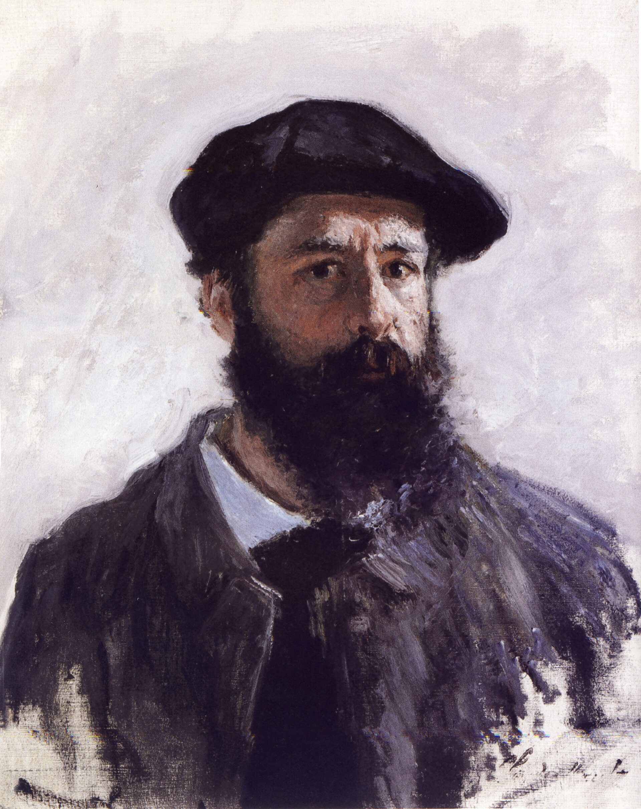
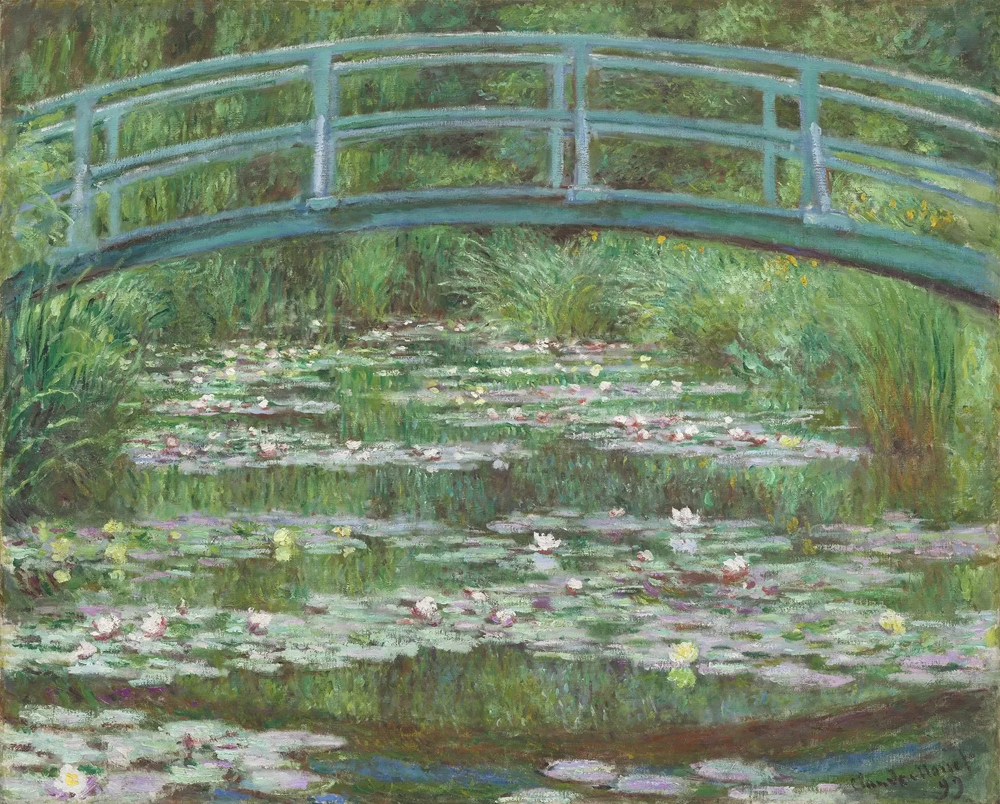

Claude Monet
I would like to paint the way a bird sings”-Claude Monet”


Claude Monet
In the viewers eyes Claude Monet is a man with great talent and achievements who has surpassed unimaginable expectations with the 2,500 pieces of art work that were created in the time that he was alive. In the eyes of Claude Monet he felt as though he was just expressing himself though his job, He gained success later on in life, his humble beginnings and attitude stuck with him as he gives insight on his thoughts and feelings throughout his career. Claude Monet’'s art continues to be inspirational…

Why Claude Monet?
As I have dabbled in some of my own artistic endeavors I have looked into artists, those that have similar or even completely different art styles than I. I look for out of the box thinking and people who inspire my own art. I chose Claude Monet as the person for my Tribute because I feel as though he is someone to look up to, I see him as a humble yet talented man who didn’t care so much about the “rules” of art. His art is far from perfectionism or realism but it is beautiful and moving, this is something I look for in my own art, I have yet to find such artistry but alas I shall still continue.